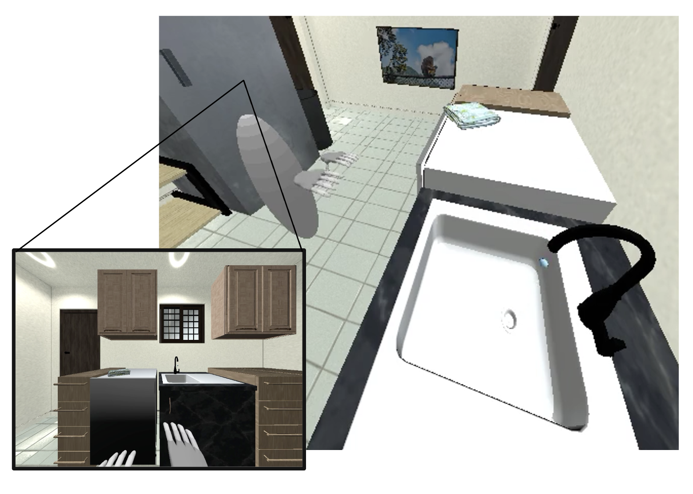

Characteristics of BEHAVIOR
100 Common Household Activities

Full Control based on Visual Input
Involving Multiple State Changes

Setup
- Embodiment: We accept solutions using any of the two following available embodiments:
- BEHAVIOR Robot: Humanoid avatar with two hands, a head and a torso.
- Fetch Robot: Model of the commercially available robot Fetch with a single arm.
Both embodiments generate the same observations but differ on the actuation.
- Observations: Participants can choose between two participation tracks that differ by the observations available to the agent.
- Track 1 - On-board Observations: The agent only gets visual signals at 30 fps including RGB, depth, semantic segmentation, and segmentation of activity-relevant objects
- Track 2 - Full observability: The agent has access to privileged information about the state of the environment such as the object poses and their state.
- Actions: Delta motion for each degree of freedom. For the BEHAVIOR Robot, the agent controls the motion of each hand (6 degrees of freedom) and the closing (1 degree of freedom), the head motion (6 degrees of freedome), and the torso motion (6 degrees of freedome). Head and hands are constrained to certain region around the torso. For the Fetch Robot, the agent controls the delta of each joint of the arm (7 degrees of freedom) and the closing (1 degree of freedom), the head (2 degrees of freedom) and the motion of the base (3 degrees of freedom).
- Reward: We provide feedback about the completion of the task. Our tasks are defined by logic conditions and we provide reward for each component of the goal condition that turns TRUE. Feel free to create your own.
- Termination conditions: The lenght of the episodes are variable depending on the activity and the scene, providing at least 3 times the length required for a human to acomplish it. We also terminate the episode if all elements of the goal condition become TRUE indicating success on the activity.
The tech spec for the robots and the camera sensor can be found in our starter code.
Evaluation, Metrics and Scoring
We evaluate solutions based on the fraction of the elements in the goal condition that are turned TRUE. A solution is evaluated in all 100 activities, in three different types of instances: a) similar to training (only changing location of task relevant objects), b) with different object instances but in the same scenes as in training, and c) in new scenes not seen during training. We use three instances of each type, totalling 9 activity instances per activity. The final score of a solution is the mean fraction obtain over all 9 instances per activity for all 100 activities. Additionally, we will have a second ranking based on the top 5 activities performed by a solution (mean of all 9 instances in those activities).
Simulation Environment and Datasets
For this first edition of BEHAVIOR, we provide a fully functional implementation in iGibson 2.0, a new version of our opensource simulation environment. iGibson 2.0 implements all necessary functionalities for the challenge such as object states (temperature, wetness level, cleanliness level, etc.) and sampling functionalities to facilitate development. We also provide the necessary datasets for the Challenge:
- iGibson 2.0 Dataset of Scenes: New versions of the fully interactive scenes, more densely populated with objects.
- BEHAVIOR Object Dataset: Dataset of object models annotated with physical and semantic properties. The 3D models are free to use within iGibson 2.0 for BEHAVIOR.
- BEHAVIOR Dataset of Human Demonstrations: To facilitate the development of solutions, we provide a dataset of human successfull executions of the activities in iGibson 2.0 using a virtual reality interface. Humans control the BEHAVIOR Robot embodiment. The dataset includes all state-action pairs and can be deterministically replayed.
Getting Started
Do you want to participate? Register in our EvalAI site and start downloading and installing the required infrastructure: a new version of iGibson, our simulation environment for interactive tasks, extended now to new object states for BEHAVIOR, the BEHAVIOR Dataset of Objects, with models to participate in the challenge, and our starter code, with examplest to train againts in the tasks.
Phases
- Minival Phase: The purpose of this phase to make sure your policy can be successfully submitted and evaluated. Participants are expected to download our starter code and submit a baseline policy, even a trivial one, to our evaluation server to verify their entire pipeline is correct.
- Dev Phase: In this phase, participants will develop their solutions. Solutions can be submitted and to be evaluated on the dataset dev split and the leaderboard will be updated within 24 hours. We will provide some quota for submissions per participant.
- Evaluation Phase: This is the final stage of the challenge and the one that will decide the ranking. Participants are expected to submit a maximum of 5 solutions during the last 15 days of the challenge. The solutions will be evaluated on the dataset test split and the results will NOT be made available until the end of the challenge.
Timeline
| Challenge Launched | July 17, 2021 |
| EvalAI Leaderboard Open, Dev Phase Starts | August 15, 2021 |
| Challenge Evaluation Phase Starts | September 15, 2021 |
| Challenge Evaluation Phase Ends | October 10, 2021 |
| Winner Demo | October 17, 2021 |
 Chengshu Li
Chengshu Li
 Sanjana Srivastava
Sanjana Srivastava
 Michael Lingelbach
Michael Lingelbach
 Fei Xia
Fei Xia
 Roberto Martín-Martín
Roberto Martín-Martín
 Silvio Savarese
Silvio Savarese
References
[1] iGibson, a Simulation Environment for Interactive Tasks in Large Realistic Scenes.. Bokui Shen, Fei Xia, Chengshu Li, Roberto Martín-Martín, Linxi Fan, Guanzhi Wang, Shyamal Buch, Claudia D'Arpino, Sanjana Srivastava, Lyne P Tchapmi, Micael E Tchapmi, Kent Vainio, Li Fei-Fei, Silvio Savarese, 2020.
[2] On evaluation of embodied navigation agents. Peter Anderson, Angel Chang, Devendra Singh Chaplot, Alexey Dosovitskiy, Saurabh Gupta, Vladlen Koltun, Jana Kosecka, Jitendra Malik, Roozbeh Mottaghi, Manolis Savva, Amir R. Zamir. arXiv:1807.06757, 2018.
[3] Interactive Gibson Benchmark: A Benchmark for Interactive Navigation in Cluttered Environments. Fei Xia, William B. Shen, Chengshu Li, Priya Kasimbeg, Micael Tchapmi, Alexander Toshev, Roberto Martín-Martín, and Silvio Savarese. RA-L, to be presented at ICRA 2020.
[4] RVO2 Library: Reciprocal Collision Avoidance for Real-Time Multi-Agent Simulation. Jur van den Berg, Stephen J. Guy, Jamie Snape, Ming C. Lin, and Dinesh Manocha, 2011.
[5] Robot Navigation in Constrained Pedestrian Environments using Reinforcement Learning.. Claudia Pérez-D'Arpino, Can Liu, Patrick Goebel, Roberto Martín-Martín and Silvio Savarese, 2020.